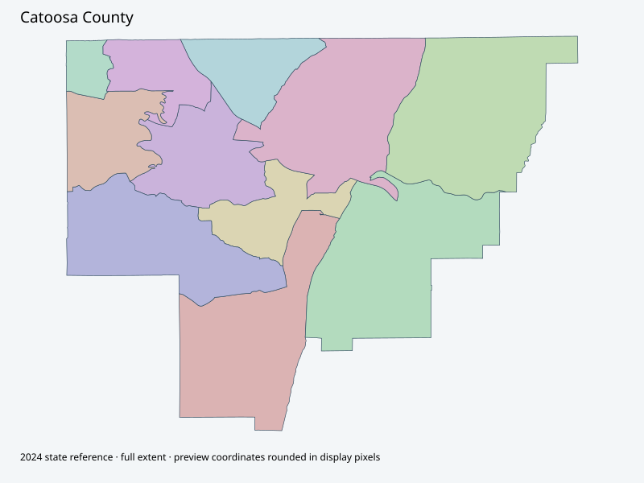

Map index · 11 explicit-FIPS 2024 map rows; 11 historical result identities. No approved crosswalk.

Full native coordinate/attribute extraction (gzip JSON) · Original complete statewide ZIP
County voting-precinct facilities page403; school-board page alternative includes board-member district map with precinct lines, not accepted as complete election precinct source. Complete2024 state precinct geometry retained.
Full objects, county source IDs/clocks and attributes: all 2,701 native contexts. isVirtual:false and source label precinct do not prove physical geometry.
| Source name | Full source GUID | Breakdown ordinal | Source | Map status |
|---|---|---|---|---|
| Blackstock | 01000000-d884-2e72-e55f-08dcda4b8b38 | 0 | 2024NovGen--catoosa-county-ga | unreviewed / no approved map join |
| Boynton | 01000000-d884-2e72-920a-08dcda4b8b3b | 1 | 2024NovGen--catoosa-county-ga | unreviewed / no approved map join |
| Catoosa Keith | 01000000-d884-2e72-450a-08dcda4b8b3e | 2 | 2024NovGen--catoosa-county-ga | unreviewed / no approved map join |
| Chambers | 01000000-d884-2e72-f2a6-08dcda4b8b41 | 3 | 2024NovGen--catoosa-county-ga | unreviewed / no approved map join |
| Ft Oglethorpe | 01000000-d884-2e72-d09a-08dcda4b8b44 | 4 | 2024NovGen--catoosa-county-ga | unreviewed / no approved map join |
| Graysville | 01000000-d884-2e72-1e32-08dcda4b8b48 | 5 | 2024NovGen--catoosa-county-ga | unreviewed / no approved map join |
| Lakeview | 01000000-d884-2e72-f119-08dcda4b8b4b | 6 | 2024NovGen--catoosa-county-ga | unreviewed / no approved map join |
| Poplar Springs | 01000000-d884-2e72-b95e-08dcda4b8b4e | 7 | 2024NovGen--catoosa-county-ga | unreviewed / no approved map join |
| Ringgold | 01000000-d884-2e72-5b3b-08dcda4b8b51 | 8 | 2024NovGen--catoosa-county-ga | unreviewed / no approved map join |
| Westside | 01000000-d884-2e72-eead-08dcda4b8b53 | 9 | 2024NovGen--catoosa-county-ga | unreviewed / no approved map join |
| Woodstation | 01000000-d884-2e72-7d9c-08dcda4b8b56 | 10 | 2024NovGen--catoosa-county-ga | unreviewed / no approved map join |
| Original row ordinal | DISTRICT | PRECINCT_I | PRECINCT_N |
|---|---|---|---|
| 1286 | 047WOOD | WOOD | WOODSTATION |
| 1288 | 047BLCK | BLCK | BLACKSTOCK |
| 1303 | 047BOYN | BOYN | BOYNTON |
| 1304 | 047POPS | POPS | POPLAR SPRINGS |
| 1305 | 047GRAY | GRAY | GRAYSVILLE |
| 1306 | 047RING | RING | RINGGOLD |
| 1307 | 047CAKT | CAKT | CATOOSA KEITH |
| 2252 | 047CHAM | CHAM | CHAMBERS |
| 2253 | 047FT O | FT O | FT OGLETHORPE |
| 2254 | 047LAKE | LAKE | LAKEVIEW |
| 2255 | 047WEST | WEST | WESTSIDE |